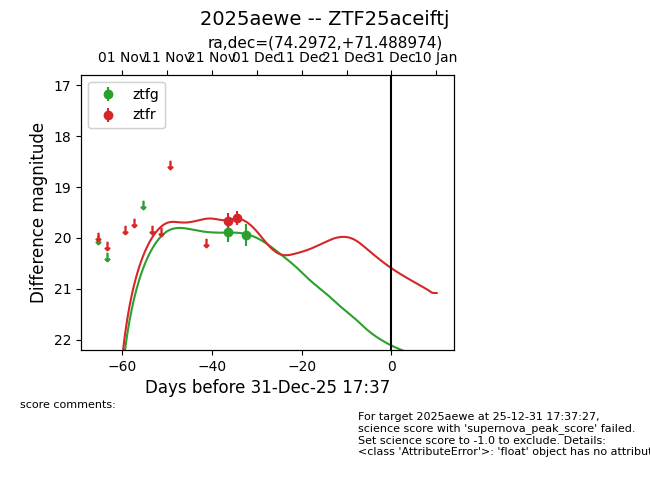
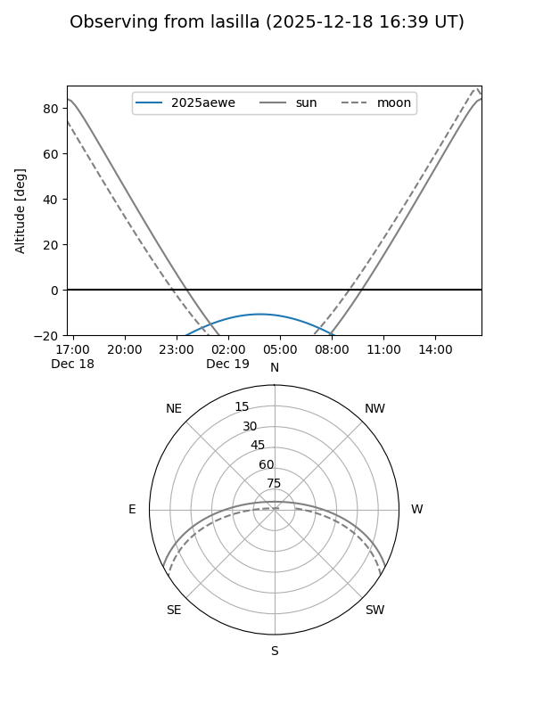
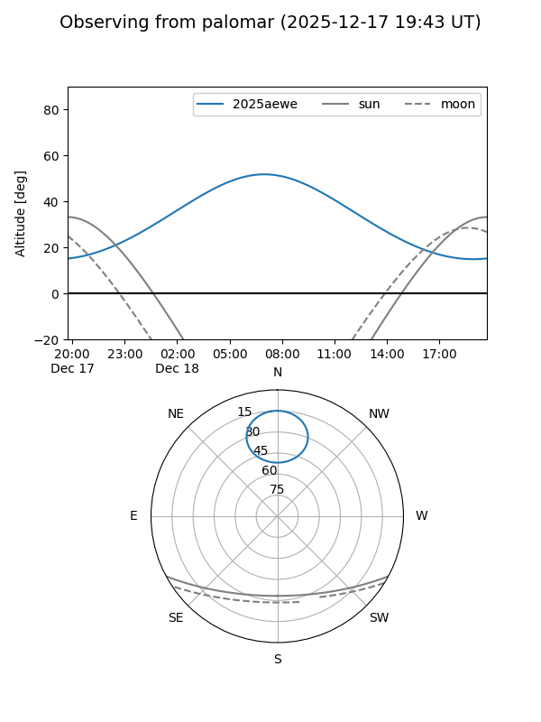
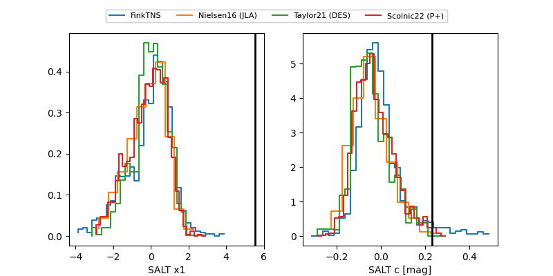

2025aewe
Target 2025aewe at 2025-12-31 16:59
Aliases and brokers:
FINK:
Lasair:
ALeRCE:
TNS:
YSE:
alt names
ZTF25aceiftj (ztf,fink_ztf)
2025aewe (tns,yse)
Coordinates:
equatorial (ra, dec) = 74.2972,+71.48897
equatorial (HMS+DMS) = 04:57:11.34,+71:29:20.31
galactic (l, b) = (139.9129,+17.29532)
Flags:
Photometry:
last ztfg=19.94, ztfr=19.61
2 ztfg, 2 ztfr detections
Lightcurve

Visibility


Additional plots
